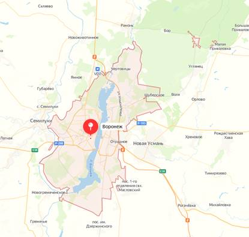
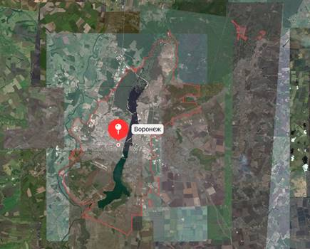
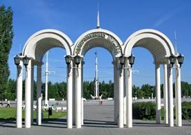
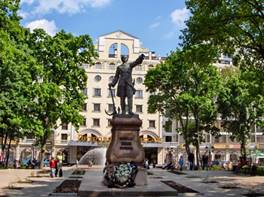
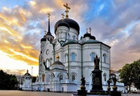

Общие сведения о городе:
Воронеж — крупный город и областной центр, который стоит на берегах Воронежского водохранилища и реки Воронеж, в 8,5 км выше того места, где она впадает в Дон. Воронеж не назовешь центром туристического паломничества. Он лежит в стороне от маршрутов Золотого кольца России и не обладает такой популярностью, как курорты Черноморского побережья Кавказа. Тем не менее старинный Воронеж имеет особый провинциальный шарм.
Карта города, вид со спутника.
Карта города:

Вид со спутника:

Историческая справка:
Город Воронеж – столица Центрального Черноземья. Он был основан в 1586 г. как крепость на юго-восточной окраине Российского государства и в то время стал важным звеном в формировавшейся Белгородской черте – оборонительной линии против регулярных набегов крымских татар на русские земли. Во время правления первых Романовых продолжалось укрепление границ России, они отодвигались на юг, и Воронеж становился все более привлекательным для торговли. Водные артерии края служили также надежным путем доставки продовольствия и военных припасов донским казакам, присягнувшим государю в защите Подонья.
Достопримечательности города
|  |
Адмиралтейская площадьДоминантой композиции является величественная ростральная колонна. Величественное сооружение, имеющее высоту в 28 м. и украшенное рострами кораблей, словно вырастает из основания в виде знаменитого воронежского струга. Вдоль набережной установлены старинные корабельные пушки. К ней пришвартован плавучий музей «Гото-Предестинация». |
|  |
Памятник Петру IПостамент к изваянию возводили почти год. Для этой цели с павловских карьеров в город доставили 7 массивных гранитных плит и огромный валун. Когда пьедестал был готов, на него установили бронзовую фигуру Петра Великого. Она выглядит весьма реалистично. Черты лица императора повторяют посмертную маску, детали костюма проработаны до мелочей. Во время ВОВ Петровская площадь оказалась в зоне оккупации. Фашисты сняли статую с пьедестала и отправили в переплавку. Только в январе 1956 г. копия скульптуры заняла законное место. |
|  |
Благовещенский соборОсновное здание составляет единый объем с трапезной и четырехярусной колокольней. Фасады белокаменного собора отделаны с пышной торжественностью, свойственной русско-византийскому стилю. Сооружение выглядит потрясающе. В храме хранятся мощи священномученика Петра, святителей Тихона Задонского и Митрофана Воронежского. |
Текст гимна города.Ссылка на музыкальные и видеоклипы, связанные с городом.
Здесь на бархатных буграх, в русском поле, Град Воронежский стоит Божьей волей. Отражается в воде вольной птицей, Здесь петровская земля и столица. Здесь творили Кольцов и Никитин, Строил храмы Митрофан Святитель. Помнят камни победу и славу, Как ходили воевать за Державу.
Припев:
Здесь колыбель морского флота И пушки лил Великий Пётр. Город — крепость, щит России, Наша земля — живая сила!
День Победы, как орден свободы, Ветераны пронесли через годы. Пронесли свою жизнь через пламя, В сердце каждого вечная память. Всё равно городские тюльпаны Зарубцуют открытые раны. И в объятьях Кольцовского сквера Снова молодость сердце согреет.
Припев:
И будут новые поэты Слагать бессмертные сонеты. Родятся Бунин и Платонов, Среди воронежских просторов!
На волнистых берегах, в русском поле, Город-труженик стоит Божьей волей. Отражается в воде куполами, Вписан в летопись времен кораблями. Книга жизни твоя не закрыта, В переплёте берегов не забыта. Никогда и нигде не уронишь Свое доброе имя — Воронеж!
Припев:
Здесь колыбель морского флота, И пушки лил Великий Пётр. Город-крепость, щит России, Наша земля — живая сила! Наш чернозём - живая сила!